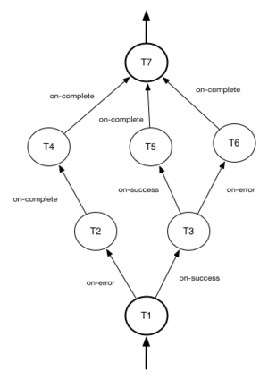
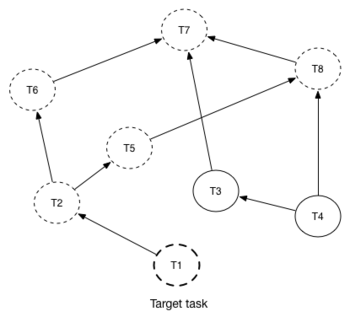

Mistral DSL v2 specification¶
Introduction¶
This document fully describes Domain Specific Language (DSL) version 2 of Mistral Workflow Service. Since version 1 issued in May 2014 Mistral team completely reworked the language pursuing the goal in mind to make it easier to understand while more consistent and flexible.
Unlike Mistral DSLv1 DSL v2 assumes that all entities that Mistral works with like workflows and actions are completely independent in terms of how they’re referenced and accessed through API (and also Python Client API and CLI). Workbook, the entity that can combine workflows and actions still exists in the language but only for namespacing and convenience purposes. See Workbooks section for more details.
NOTE: DSL and API of version 1 has not been supported since April 2015 and DSL and API of version 2 is now the only way to interact with Mistral service.
Mistral DSL consists of the following main object(entity) types that will be described in details below:
Prerequisites¶
Mistral DSL supports YAQL and Jinja2 expression languages to reference workflow context variables and thereby implements passing data between workflow tasks. It’s also referred to as Data Flow mechanism. YAQL is a simple but powerful query language that allows to extract needed information from JSON structured data. It is allowed to use YAQL in the following sections of DSL:
- Workflow ‘output’ attribute
- Workflow ‘task-defaults’ attribute
- Direct workflow transitions
- Task ‘publish’ attribute
- Task ‘input’ attribute
- Task ‘with-items’ attribute
- Task ‘target’ attribute
- Any attribute of task policies
- Action ‘base-input’ attribute
- Action ‘output’ attribute
Mistral DSL is fully based on YAML and knowledge of YAML is a plus for better understanding of the material in this specification. It also takes advantage of supported query languages to define expressions in workflow and action definitions.
- Yet Another Markup Language (YAML): http://yaml.org
- Yet Another Query Language (YAQL): https://pypi.python.org/pypi/yaql/1.0.0
- Jinja 2: http://jinja.pocoo.org/docs/dev/
Workflows¶
Workflow is the main building block of Mistral DSL, the reason why the project exists. Workflow represents a process that can be described in a various number of ways and that can do some job interesting to the end user. Each workflow consists of tasks (at least one) describing what exact steps should be made during workflow execution.
YAML example¶
---
version: '2.0'
create_vm:
description: Simple workflow example
type: direct
input:
- vm_name
- image_ref
- flavor_ref
output:
vm_id: <% $.vm_id %>
tasks:
create_server:
action: nova.servers_create name=<% $.vm_name %> image=<% $.image_ref %> flavor=<% $.flavor_ref %>
publish:
vm_id: <% task(create_server).result.id %>
on-success:
- wait_for_instance
wait_for_instance:
action: nova.servers_find id=<% $.vm_id %> status='ACTIVE'
retry:
delay: 5
count: 15
This example workflow simply sends a command to OpenStack Compute service Nova to start creating a virtual machine and wait till it’s created using special “retry” policy.
Workflow types¶
Mistral DSL v2 introduces different workflow types and the structure of each workflow type varies according to its semantics. Basically, workflow type encapsulates workflow processing logic, a set of meta rules defining how all workflows of this type should work. Currently, Mistral provides two workflow types:
See corresponding sections for details.
Common workflow attributes¶
- type - Workflow type. Either ‘direct’ or ‘reverse’. Optional. ‘direct’ by default.
- description - Arbitrary text containing workflow description. Optional.
- input - List defining required input parameter names and optionally their default values in a form “my_param: 123”. Optional.
- output - Any data structure arbitrarily containing expressions that defines workflow output. May be nested. Optional.
- output-on-error - Any data structure arbitrarily containing YAQL expressions that defines output of a workflow to be returned if it goes into error state. May be nested. Optional.
- task-defaults - Default settings for some of task attributes
defined at workflow level. Optional. Corresponding attribute
defined for a specific task always takes precedence. Specific task
attributes that could be defined in task-defaults are the
following:
- on-error - List of tasks which will run after the task has completed with an error. For direct workflow only. Optional.
- on-success - List of tasks which will run after the task has completed successfully. For direct workflow only. Optional.
- on-complete - List of tasks which will run after the task has completed regardless of whether it is successful or not. For direct workflow only. Optional.
- requires - List of tasks that a task depends on. For reverse workflow only. Optional.
- pause-before - Configures pause-before policy. Optional.
- wait-before - Configures wait-before policy. Optional.
- wait-after - Configures wait-after policy. Optional.
- timeout - Configures timeout policy. Optional.
- retry - Configures retry policy. Optional.
- concurrency - Configures concurrency policy. Optional.
- tasks - Dictionary containing workflow tasks. See below for more details. Required.
Tasks¶
Task is what a workflow consists of. It defines a specific computational step in the workflow. Each task can optionally take input data and produce output. In Mistral DSL v2 task can be associated with an action or a workflow. In the example below there are two tasks of different types:
action_based_task:
action: std.http url='openstack.org'
workflow_based_task:
workflow: backup_vm_workflow vm_id=<% $.vm_id %>
Actions will be explained below in an individual paragraph but looking ahead it’s worth saying that Mistral provides a lot of actions out of the box (including actions for most of the core OpenStack services) and it’s also easy to plug new actions into Mistral.
Common task attributes¶
All Mistral tasks regardless of workflow type have the following common attributes:
description - Arbitrary text containing task description. Optional.
action - Name of the action associated with the task. Mutually exclusive with workflow. If neither action nor workflow are provided then the action ‘std.noop’ will be used.
workflow - Name of the workflow associated with the task. Mutually exclusive with action.
input - Actual input parameter values of the task. Optional. Value of each parameter is a JSON-compliant type such as number, string etc, dictionary or list. It can also be an expression to retrieve value from task context or any of the mentioned types containing inline expressions (for example, string “<% $.movie_name %> is a cool movie!”)
publish - Dictionary of variables to publish to the workflow context. Any JSON-compatible data structure optionally containing expression to select precisely what needs to be published. Published variables will be accessible for downstream tasks via using expressions. Optional.
- publish-on-error - Same as publish but evaluated in case of
task execution failures. Optional
with-items - If configured, it allows to run action or workflow associated with a task multiple times on a provided list of items. See Processing collections using ‘with-items’ for details. Optional.
keep-result - Boolean value allowing to not store action results after task completion (e.g. if they are large and not needed afterwards). Optional. By default is ‘true’.
target - String parameter. It defines an executor to which task action should be sent to. Target here physically means a name of executors group but task will be run only on one of them. Optional.
pause-before - Configures pause-before policy. Optional.
wait-before - Configures wait-before policy. Optional.
wait-after - Configures wait-after policy. Optional.
timeout - Configures timeout policy. Optional.
retry - Configures retry policy. Optional.
concurrency - Configures concurrency policy. Optional.
safe-rerun - Boolean value allowing to rerun task if executor dies during action execution. If set to ‘true’ task may be run twice. Optional. By default set to ‘false’.
Policies¶
Any Mistral task regardless of its workflow type can optionally have configured policies.
YAML example
my_task:
action: my_action
pause-before: true
wait-before: 2
wait-after: 4
timeout: 30
retry:
count: 10
delay: 20
break-on: <% $.my_var = true %>
continue-on: <% $.my_var = false %>
pause-before
Defines whether Mistral Engine should put the workflow on hold or not before starting a task.
wait-before
Defines a delay in seconds that Mistral Engine should wait before starting a task.
wait-after
Defines a delay in seconds that Mistral Engine should wait after a task has completed before starting next tasks defined in on-success, on-error or on-complete.
timeout
Defines a period of time in seconds after which a task will be failed automatically by engine if hasn’t completed.
concurrency
Defines a max number of actions running simultaneously in a task. Applicable only for tasks that have with-items.
retry
Defines a pattern how task should be repeated in case of an error.
- count - Defines a maximum number of times that a task can be repeated.
- delay - Defines a delay in seconds between subsequent task iterations.
- break-on - Defines an expression that will break iteration loop if it evaluates to ‘true’. If it fires then the task is considered error.
- continue-on - Defines an expression that will continue iteration loop if it evaluates to ‘true’. If it fires then the task is considered successful. If it evaluates to ‘false’ then policy will break the iteration.
Retry policy can also be configured on a single line as:
task1:
action: my_action
retry: count=10 delay=5 break-on=<% $.foo = 'bar' %>
All parameter values for any policy can be defined as expressions.
Simplified input syntax¶
When describing a workflow task it’s possible to specify its input parameters in two ways:
Full syntax:
my_task:
action: std.http
input:
url: http://mywebsite.org
method: GET
Simplified syntax:
my_task:
action: std.http url="http://mywebsite.org" method="GET"
The same rules apply to tasks associated with workflows.
Full syntax:
my_task:
workflow: some_nested_workflow
input:
param1: val1
param2: val2
Simplified syntax:
my_task:
workflow: some_nested_workflow param1='val1' param2='val2'
NOTE: It’s also possible to merge these two approaches and specify a part of parameters using simplified key-value pairs syntax and using keyword input. In this case all the parameters will be effectively merged. If the same parameter is specified in both ways then the one under input keyword takes precedence.
Direct workflow¶
Direct workflow consists of tasks combined in a graph where every next task starts after another one depending on produced result. So direct workflow has a notion of transition. Direct workflow is considered to be completed if there aren’t any transitions left that could be used to jump to next tasks.
Figure 1. Mistral Direct Workflow.
YAML example¶
---
version: '2.0'
create_vm_and_send_email:
type: direct
input:
- vm_name
- image_id
- flavor_id
output:
result: <% $.vm_id %>
tasks:
create_vm:
action: nova.servers_create name=<% $.vm_name %> image=<% $.image_id %> flavor=<% $.flavor_id %>
publish:
vm_id: <% task(create_vm).result.id %>
on-error:
- send_error_email
on-success:
- send_success_email
send_error_email:
action: send_email to_addrs=['admin@mysite.org'] body='Failed to create a VM'
on-complete:
- fail
send_success_email:
action: send_email to_addrs=['admin@mysite.org'] body='Vm is successfully created and its id <% $.vm_id %>'
Direct workflow task attributes¶
- on-success - List of tasks which will run after the task has completed successfully. Optional.
- on-error - List of tasks which will run after the task has completed with an error. Optional.
- on-complete - List of tasks which will run after the task has completed regardless of whether it is successful or not. Optional.
Transitions with YAQL expressions¶
Task transitions can be determined by success/error/completeness of the previous tasks and also by additional guard expressions that can access any data produced by upstream tasks. So in the example above task ‘create_vm’ could also have a YAQL expression on transition to task ‘send_success_email’ as follows:
create_vm:
...
on-success:
- send_success_email: <% $.vm_id != null %>
And this would tell Mistral to run ‘send_success_email’ task only if ‘vm_id’ variable published by task ‘create_vm’ is not empty. Expressions can also be applied to ‘on-error’ and ‘on-complete’.
Fork¶
There are situations when we need to be able to run more than one task after some task has completed.
create_vm:
...
on-success:
- register_vm_in_load_balancer
- register_vm_in_dns
In this case Mistral will run both “register_xxx” tasks simultaneously and this will lead to multiple independent workflow routes being processed in parallel.
Join¶
Join flow control allows to synchronize multiple parallel workflow branches and aggregate their data.
Full Join (join: all)
register_vm_in_load_balancer:
...
on-success:
- wait_for_all_registrations
register_vm_in_dns:
...
on-success:
- wait_for_all_registrations
try_to_do_something_without_registration:
...
on-error:
- wait_for_all_registrations
wait_for_all_registrations:
join: all
action: send_email
When a task has property “join” assigned with value “all” the task will run only if all upstream tasks (ones that lead to this task) are completed and corresponding conditions have triggered. Task A is considered an upstream task of Task B if Task A has Task B mentioned in any of its “on-success”, “on-error” and “on-complete” clauses regardless of guard expressions.
Partial Join (join: 2)
register_vm_in_load_balancer:
...
on-success:
- wait_for_all_registrations
register_vm_in_dns:
...
on-success:
- wait_for_all_registrations
register_vm_in_zabbix:
...
on-success:
- wait_for_all_registrations
wait_for_two_registrations:
join: 2
action: send_email
When a task has property “join” assigned with a numeric value then the task will run once at least this number of upstream tasks are completed and corresponding conditions have triggered. In the example above task “wait_for_two_registrations” will run if two any of “register_vm_xxx” tasks complete.
Discriminator (join: one)
Discriminator is a special case of Partial Join when “join” property has value 1. It means Mistral will wait for any completed task. In this case instead of 1 it is possible to specify special string value “one” which is introduced for symmetry with “all”. However, it’s up to the user whether to use “1” or “one”.
Reverse workflow¶
In reverse workflow all relationships in workflow task graph are dependencies. In order to run this type of workflow we need to specify a task that needs to be completed, it can be conventionally called ‘target task’. When Mistral Engine starts a workflow it recursively identifies all the dependencies that need to be completed first.
Figure 2 explains how reverse workflow works. In the example, task T1 is chosen a target task. So when the workflow starts Mistral will run only tasks T7, T8, T5, T6, T2 and T1 in the specified order (starting from tasks that have no dependencies). Tasks T3 and T4 won’t be a part of this workflow because there’s no route in the directed graph from T1 to T3 or T4.
YAML example¶
---
version: '2.0'
create_vm_and_send_email:
type: reverse
input:
- vm_name
- image_id
- flavor_id
output:
result: <% $.vm_id %>
tasks:
create_vm:
action: nova.servers_create name=<% $.vm_name %> image=<% $.image_id %> flavor=<% $.flavor_id %>
publish:
vm_id: <% task(create_vm).result.id %>
search_for_ip:
action: nova.floating_ips_findall instance_id=null
publish:
vm_ip: <% task(search_for_ip).result[0].ip %>
associate_ip:
action: nova.servers_add_floating_ip server=<% $.vm_id %> address=<% $.vm_ip %>
requires: [search_for_ip]
send_email:
action: send_email to='admin@mysite.org' body='Vm is created and id <% $.vm_id %> and ip address <% $.vm_ip %>'
requires: [create_vm, associate_ip]
Reverse workflow task attributes¶
- requires - List of tasks which should be executed before this task. Optional.
Processing collections¶
YAML example¶
---
version: '2.0'
create_vms:
description: Creating multiple virtual servers using "with-items".
input:
- vm_names
- image_ref
- flavor_ref
output:
vm_ids: <% $.vm_ids %>
tasks:
create_servers:
with-items: vm_name in <% $.vm_names %>
action: nova.servers_create name=<% $.vm_name %> image=<% $.image_ref %> flavor=<% $.flavor_ref %>
publish:
vm_ids: <% task(create_servers).result.id %>
on-success:
- wait_for_servers
wait_for_servers:
with-items: vm_id in <% $.vm_ids %>
action: nova.servers_find id=<% $.vm_id %> status='ACTIVE'
retry:
delay: 5
count: <% $.vm_names.len() * 10 %>
Workflow “create_vms” in this example creates as many virtual servers as we provide in “vm_names” input parameter. E.g., if we specify vm_names=[“vm1”, “vm2”] then it’ll create servers with these names based on same image and flavor. It is possible because of using “with-items” keyword that makes an action or a workflow associated with a task run multiple times. Value of “with-items” task property contains an expression in the form: in <% YAQL_expression %>.
The most common form is:
with-items:
- var1 in <% YAQL_expression_1 %>
- var2 in <% YAQL_expression_2 %>
...
- varN in <% YAQL_expression_N %>
where collections expressed as YAQL_expression_1, YAQL_expression_2, YAQL_expression_N must have equal sizes. When a task gets started Mistral will iterate over all collections in parallel, i.e. number of iterations will be equal to length of any collections.
Note that in case of using “with-items” task result accessible in workflow context as <% task(task_name).result %> will be a list containing results of corresponding action/workflow calls. If at least one action/workflow call has failed then the whole task will get into ERROR state. It’s also possible to apply retry policy for tasks with “with-items” property. In this case retry policy will be relaunching all action/workflow calls according to “with-items” configuration. Other policies can also be used the same way as with regular non “with-items” tasks.
Actions¶
Action defines what exactly needs to be done when task starts. Action is similar to a regular function in general purpose programming language like Python. It has a name and parameters. Mistral distinguishes ‘system actions’ and ‘Ad-hoc actions’.
System actions¶
System actions are provided by Mistral out of the box and can be used by anyone. It is also possible to add system actions for specific Mistral installation via a special plugin mechanism. Currently, built-in system actions are:
std.fail¶
Fail the current workflow. This action can be used to manually set the workflow state to error.
Example:
manual_fail:
action: std.fail
std.http¶
Sends an HTTP request.
Input parameters:
- url - URL for the HTTP request. Required.
- method - method for the HTTP request. Optional. Default is ‘GET’.
- params - Dictionary or bytes to be sent in the query string for the HTTP request. Optional.
- body - Dictionary, bytes, or file-like object to send in the body of the HTTP request. Optional.
- headers - Dictionary of HTTP Headers to send with the HTTP request. Optional.
- cookies - Dictionary of HTTP Cookies to send with the HTTP request. Optional.
- auth - Auth to enable Basic/Digest/Custom HTTP Auth. Optional.
- timeout - Float describing the timeout of the request in seconds. Optional.
- allow_redirects - Boolean. Set to True if POST/PUT/DELETE redirect following is allowed. Optional.
- proxies - Dictionary mapping protocol to the URL of the proxy. Optional.
Example:
http_task:
action: std.http url='google.com'
std.mistral_http¶
This action works just like ‘std.http’ with the only exception: when sending a request it inserts the following HTTP headers:
- Mistral-Workflow-Name - Name of the workflow that the current action execution is associated with.
- Mistral-Execution-Id - Identifier of the workflow execution this action is associated with.
- Mistral-Task-Id - Identifier of the task execution this action execution is associated with.
- Mistral-Action-Execution-Id - Identifier of the current action execution.
Using this action makes it possible to do any work in asynchronous manner triggered via HTTP protocol. That means that Mistral can send a request using ‘std.mistral_http’ and then any time later whatever system that received this request can notify Mistral back (using its public API) with the result of this action. Header Mistral-Action-Execution-Id is required for this operation because it is used a key to find corresponding action execution in Mistral to attach the result to.
std.email¶
Sends an email message via SMTP protocol.
- to_addrs - Comma separated list of recipients. Required.
- subject - Subject of the message. Optional.
- body - Text containing message body. Optional.
- from_addr - Sender email address. Required.
- smtp_server - SMTP server host name. Required.
- smtp_password - SMTP server password. Required.
Example:
send_email_task:
action: std.email
input:
to_addrs: [admin@mywebsite.org]
subject: Hello from Mistral :)
body: |
Cheers! (:_:)
-- Thanks, Mistral Team.
from_addr: mistral@openstack.org
smtp_server: smtp.google.com
smtp_password: SECRET
The syntax of ‘std.emal’ action is pretty verbose. However, it can be significantly simplified using Ad-hoc actions. More about them below.
std.ssh¶
Runs Secure Shell command.
Input parameters:
- cmd - String containing a shell command that needs to be executed. Required.
- host - Host name that the command needs to be executed on. Required.
- username - User name to authenticate on the host. Required.
- password - User password to to authenticate on the host. Optional.
- private_key_filename - Private key file name which will be used for authentication on remote host.
All private keys should be on executor host in <home-user-directory>/.ssh/. <home-user-directory> should refer to user directory under which service is running. Optional.
NOTE: Authentication using key pairs is supported, key should be on Mistral Executor server machine.
std.echo¶
Simple action mostly needed for testing purposes that returns a predefined result.
Input parameters:
- output - Value of any type that needs to be returned as a result of the action. Required.
std.javascript¶
Evaluates given JavaScript code.
Input parameters:
- script - The text of JavaScript snippet that needs to be executed. Required.
To use std.javascript, it is needed to install a number of dependencies and JS engine. Currently Mistral uses only V8 Engine and its wrapper - PyV8. For installing it, do the next steps:
Install required libraries - boost, g++, libtool, autoconf, subversion, libv8-legacy-dev: On Ubuntu:
$ sudo apt-get install libboost-all-dev g++ libtool autoconf libv8-legacy-dev subversion make
Checkout last version of PyV8:
$ svn checkout http://pyv8.googlecode.com/svn/trunk/ pyv8 $ cd pyv8
Build PyV8 - it will checkout last V8 trunk, build it, and then build PyV8:
$ sudo python setup.py build
Install PyV8:
$ sudo python setup.py install
Example:
---
version: '2.0'
generate_uuid:
description: Generates a Universal Unique ID
type: direct
input:
- radix: 16
output:
uuid: <% $.generated_uuid %>
tasks:
generate_uuid_task:
action: std.javascript
input:
context: <% $ %>
script: |
return 'xxxxxxxx-xxxx-4xxx-yxxx-xxxxxxxxxxxx'.replace(/[xy]/g, function(c) {
var r = Math.random() * 16 | 0, v = c == 'x' ? r : (r&0x3|0x8);
return v.toString($.radix);
});
publish:
generated_uuid: <% task(generate_uuid_task).result %>
Another example for getting the current date and time:
---
version: '2.0'
get_date_workflow:
description: Get the current date
type: direct
output:
current_date: <% $.current_date %>
tasks:
get_date_task:
action: std.javascript
input:
context: <% $ %>
script: |
var date = new Date();
return date; # returns "2015-07-12T10:32:12.460000" or use date.toLocaleDateString() for "Sunday, July 12, 2015"
publish:
current_date: <% task(get_date_task).result %>
Ad-hoc actions¶
Ad-hoc action is a special type of action that can be created by user. Ad-hoc action is always created as a wrapper around any other existing system action and its main goal is to simplify using same actions many times with similar pattern.
NOTE: Nested ad-hoc actions currently are not supported (i.e. ad-hoc action around another ad-hoc action).
YAML example¶
---
version: '2.0'
error_email:
input:
- execution_id
base: std.email
base-input:
to_addrs: ['admin@mywebsite.org']
subject: 'Something went wrong with your Mistral workflow :('
body: |
Please take a look at Mistral Dashboard to find out what's wrong
with your workflow execution <% $.execution_id %>.
Everything's going to be alright!
-- Sincerely, Mistral Team.
from_addr: 'mistral@openstack.org'
smtp_server: 'smtp.google.com'
smtp_password: 'SECRET'
Once this action is uploaded to Mistral any workflow will be able to use it as follows:
my_workflow:
tasks:
...
send_error_email:
action: error_email execution_id=<% execution().id %>
Attributes¶
- base - Name of base action that this action is built on top of. Required.
- base-input - Actual input parameters provided to base action. Look at the example above. Optional.
- input - List of declared action parameters which should be specified as corresponding task input. This attribute is optional and used only for documenting purposes. Mistral now does not enforce actual input parameters to exactly correspond to this list. Based parameters will be calculated based on provided actual parameters with using expressions so what’s used in expressions implicitly define real input parameters. Dictionary of actual input parameters (expression context) is referenced as ‘$.’ in YAQL and as ‘_.’ in Jinja. Redundant parameters will be simply ignored.
- output - Any data structure defining how to calculate output of this action based on output of base action. It can optionally have expressions to access properties of base action output through expression context.
Workbooks¶
As mentioned before, workbooks still exist in Mistral DSL version 2 but purely for convenience. Using workbooks users can combine multiple entities of any type (workflows, actions and triggers) into one document and upload to Mistral service. When uploading a workbook Mistral will parse it and save its workflows, actions and triggers as independent objects which will be accessible via their own API endpoints (/workflows, /actions and /triggers/). Once it’s done the workbook comes out of the game. User can just start workflows and use references to workflows/actions/triggers as if they were uploaded without workbook in the first place. However, if we want to modify these individual objects we can modify the same workbook definition and re-upload it to Mistral (or, of course, we can do it independently).
Namespacing¶
One thing that’s worth noting is that when using a workbook Mistral uses its name as a prefix for generating final names of workflows, actions and triggers included into the workbook. To illustrate this principle let’s take a look at the figure below.
So after a workbook has been uploaded its workflows and actions become independent objects but with slightly different names.
YAML example¶
---
version: '2.0'
name: my_workbook
description: My set of workflows and ad-hoc actions
workflows:
local_workflow1:
type: direct
tasks:
task1:
action: local_action str1='Hi' str2=' Mistral!'
on-complete:
- task2
task2:
action: global_action
...
local_workflow2:
type: reverse
tasks:
task1:
workflow: local_workflow1
task2:
workflow: global_workflow param1='val1' param2='val2'
requires: [task1]
...
actions:
local_action:
input:
- str1
- str2
base: std.echo output="<% $.str1 %><% $.str2 %>"
NOTE: Even though names of objects inside workbooks change upon uploading Mistral allows referencing between those objects using local names declared in the original workbook.
Attributes¶
- name - Workbook name. Required.
- description - Workbook description. Optional.
- tags - String with arbitrary comma-separated values. Optional.
- workflows - Dictionary containing workflow definitions. Optional.
- actions - Dictionary containing ad-hoc action definitions. Optional.
Predefined values/Functions in execution data context¶
Using expressions it is possible to use some predefined values in Mistral DSL.
- OpenStack context
- Task result
- Execution info
- Environment
OpenStack context¶
OpenStack context is available by $.openstack. It contains auth_token, project_id, user_id, service_catalog, user_name, project_name, roles, is_admin properties.
Task result¶
Task result is available by task(<task_name>).result. It contains task result and directly depends on action output structure. Note that the task(<task_name>) function itself returns more than only task result. It returns the following fields of task executions:
- id - task execution UUID.
- name - task execution name.
- spec - task execution spec dict (loaded from DSL).
- state - task execution state.
- state_info - task execution state info.
- result - task execution result.
- published - task execution published variables.
Execution info¶
Execution info is available by execution(). It contains information about execution itself such as id, wf_spec, input and start_params.
Environment¶
Environment info is available by env(). It is passed when user submit workflow execution. It contains variables specified by user.